This document describes a method for generating test cases for cycle detection algorithms in directed graphs. The approach constructs graphs with known ground truth by tracking which edges would form cycles during the construction process.
Testing cycle detection implementations is difficult because common approaches lead to circular reasoning. For example, comparing the output of one HasCycle() implementation against another requires trusting that the reference implementation is correct—but that's exactly what we're trying to verify.
The solution uses a constructive method that builds directed graphs while explicitly tracking cycle-forming potential. The key insight is that we can know the test oracle (i.e., whether the generated graph has cycles or not) deterministically without running any HasCycle() algorithm—the ground truth is established by construction.
During construction, edges are classified into two categories:
This classification allows us to generate test cases with guaranteed properties:
The algorithm works as follows:
The critical component of this method is the systematic identification of red edges in step 4. Given a newly added blue edge X→Y, we determine all potential cycle-completing edges as follows:
We demonstrate the algorithm through a concrete example with an 11-node directed graph (where 11 was randomly picked as the graph size).
Generate an 11-node directed graph with no edges:
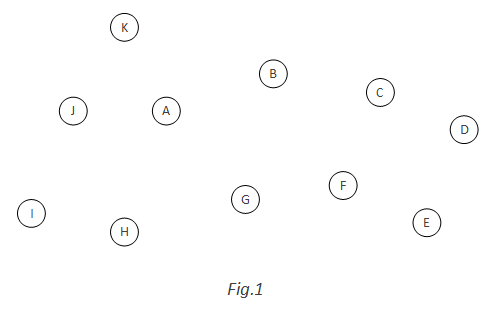Randomly select nodes A and K. Add blue edge A→K. Apply the red edge identification algorithm: since from-K = {K} and to-A = {A}, we add red edge K→A. This red edge would complete the cycle A→K→A:
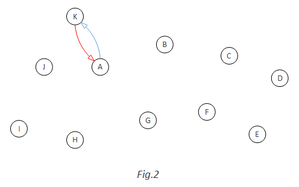K and red arc K->A" style="max-width: 100%; height: auto;">Add blue edge B→A. For this edge, from-A = {A, K} and to-B = {B}. Therefore, we add red edges A→B and K→B. Edge A→B would complete cycle B→A→B, while edge K→B would complete cycle B→A→K→B:
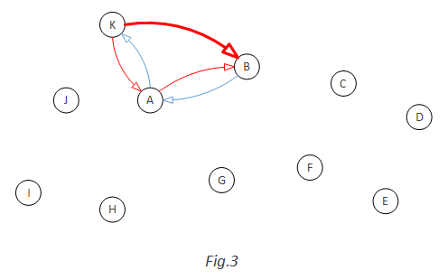A with red arcs A->B and K->B" style="max-width: 100%; height: auto;">When blue edge G→H is added, we compute from-H = {H} and to-G = {G, A, B}. This results in red edges H→G, H→A, and H→B, each completing a distinct cycle:
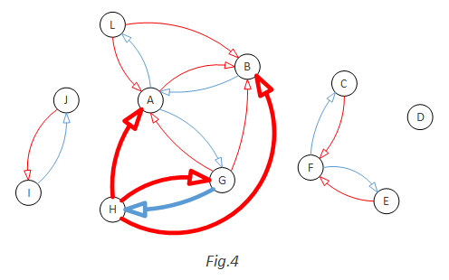H with red arcs H->G, H->A, H->B" style="max-width: 100%; height: auto;">Consider the addition of blue edge G→F to a more complex graph state:
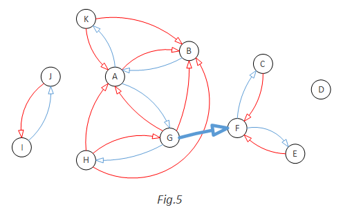F" style="max-width: 100%; height: auto;">For this edge, we compute from-F = {F, C, E} and to-G = {G, A, B}. The algorithm generates nine red edges: F→G, F→A, F→B, C→G, C→A, C→B, E→G, E→A, E→B:
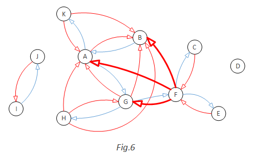 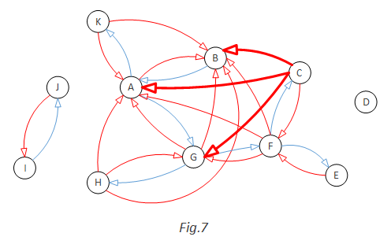 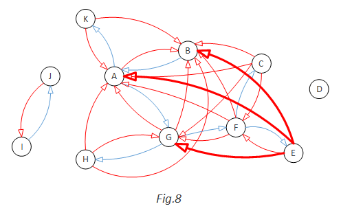After multiple iterations, the algorithm produces a graph containing both blue and red edges:
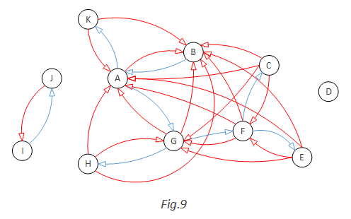To generate an acyclic directed graph, remove all red edges from the construction. The resulting graph contains only blue edges and is guaranteed to be cycle-free:
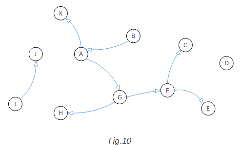To generate a cyclic directed graph, randomly select one or more red edges and convert them to blue edges, then remove all remaining red edges. For example, converting edge C→A to blue creates cycle A→G→F→C→A:
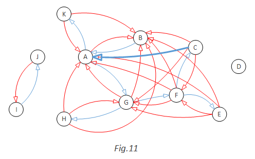A to blue" style="max-width: 100%; height: auto;"> 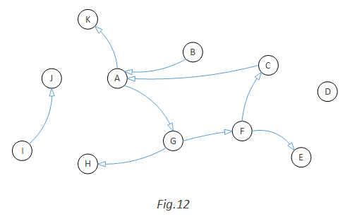G->F->C->A" style="max-width: 100%; height: auto;">This method provides comprehensive coverage of all possible directed graph configurations. The algorithm can generate graphs with zero, single, or multiple cycles by systematically controlling the conversion of red edges to blue edges. The constructive approach ensures that the ground truth (presence or absence of cycles) is known by design, eliminating the need for potentially unreliable reference implementations.
We have presented a systematic approach for generating random test cases for cycle detection algorithms in directed graphs. The method addresses the fundamental challenge of establishing ground truth without circular reasoning, providing a robust foundation for testing cycle detection implementations across diverse graph topologies.